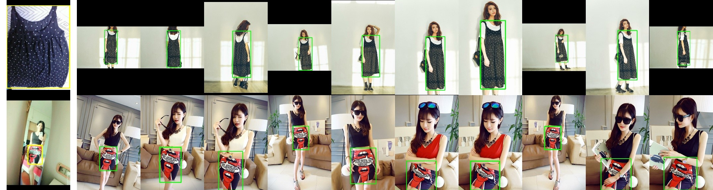
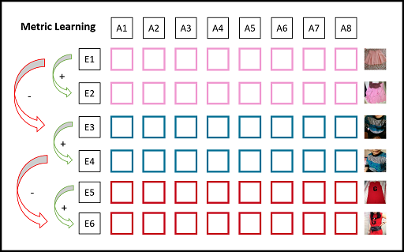
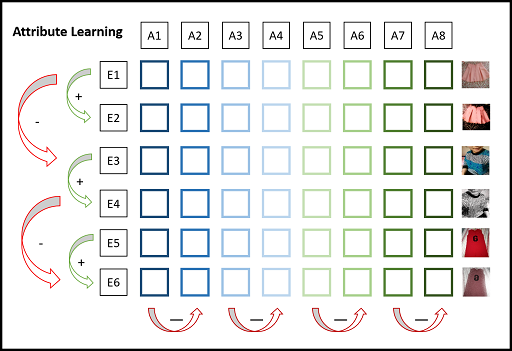
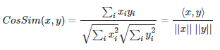
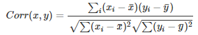
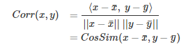
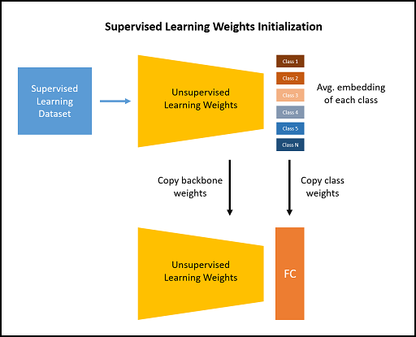
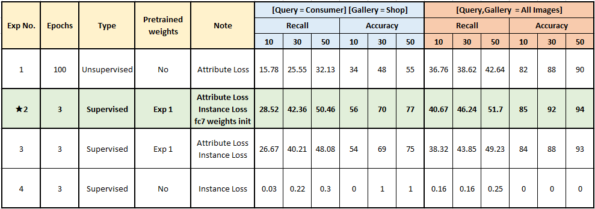
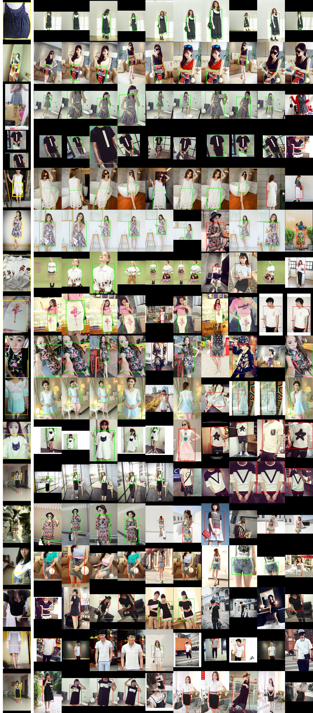

Clothes Retrieval¶
Searching for exact cloth image accurately from massive collections of clothes' images based on a query image.
For example, here the left most image is the query image and other images are matched images retrieved from a huge collection of clothes using a computer vision algorithm.

Dataset Details¶
- Dataset used : Deep Fashion 2
- Problem statement : Consumer-to-shop Clothes Retrieval
- Problem description: Matching consumer-taken photos with their shop counterparts
Code¶
Building the intuition¶
Sorted in the order of how I reached the solution
1. Usecase understanding¶
- Consumer can upload a photo of clothing item
- System should retrieve similar looking items from shopping catalog.
2. Dataset understanding¶
In the given task, we have two different sources of data.
- Consumer captured images :
These are low quality images captured using phone's camera (front or back). Images have variation in lighting, orientation, occlusion, filters etc.
- Shop captured images :
Shop images include good quality photo shoot quality images. It also includes images from online shopping carts where background is removed etc.
3. Real world challenges¶
- Labeling the dataset is major challenge
- Shopping image collection including online and offline stores can be huge
- Thousands of unique clothing items
- Manually pairing each user captured image to a similar shop image costs lots of human effort
- When the product is new, we might not have huge collection of user captured images. In that case the system cannot work better for new styles
Solving the problem¶
Considering the scarcity of labeled consumer to shop pairs, I decided build two stage pipeline. First learning task agnostic attributes from raw data then use them to reduce consumer to shop domain gap using fewer labeled images.
Step 1 : Learning directly from raw images without labeling¶
Observations
- Humans are good at pattern matching.
- We recognize many things from their attributes. For e.g we recognize a vehicle with wheels, seats, glasses, horn etc.
- We also use this attributes to distinguish between two different vehicles
- We learn about these attributes by comparing between many instances unconsciously
Inspirations
- Deep learning model can also learn similar attributes by just observing across different images
- In many image retrieval problems we consider output of pre-fc layer as embedding
- We use metric learning approaches such as triplet loss to lean discriminative embedding
- We can consider each dimension in embedding vector as one attribute
- This attributes make the embedding vector discriminative
Difference from metric learning
- Metric learning approaches try to increase distance between embeddings as a whole. For that we need positive and negative pairs.

- Instead we can increase distance between attributes of embedding without labels.
- Here, We do not try to teach which attribute represents what?
- We try to teach that no two attributes should represent same concept.

Mathematical Formulation
- We often calculate similarity of two vectors using cosine similarity measure.
- Cosine similarity has an interpretation as the cosine of the angle between the two vectors
- Cosine similarity is not invariant to shifts. If x was shifted to x+1, the cosine similarity would change.

- Unlike the cosine, the correlation is invariant to both scale and location changes of x and y.

- Correlation is the cosine similarity between centered versions of x and y

- In a batch of images, attribute vector represents values of particular dimension across all images
- For e.g if batch size = 512 and embedding dim = 2048, then we have 2048 attribute vectors each of length 512
- Now consider another batch of slightly different version of the same images in first batch.
Our goal is to
- Maximize cosine similarity of same attributes in both batches
-
Minimize cosine similarity of different attributes in both batches
-
Here, I used correlation as a proxy loss as both have same output range [-1,1]
I divided loss function in two parts
- Correlation of attribute vectors at same index should be 1. To make model generalize better I decreased the predicted correlation by margin m. For e.g if correlation is 0.9 we make it 0.6 so model tries to make it higher.
- Correlation of attribute vectors at different index should be 0.
- Since there are N^2-N pairs of different attribute vectors I assigned lower weight compared to positive attribute pair.
Code for attribute loss
def attribute_loss(emb_1, emb_2, alpha=5e-4, margin=0.3):
# per feature-dimension normalisation
standardize = lambda x : (x - tf.reduce_mean(x, axis=0)) / tf.math.reduce_std(x, axis=0)
emb_1_std = standardize(emb_1) # BxE
emb_2_std = standardize(emb_2) # BxE
# similarity of pairwise feature-dimension
bsize = tf.cast(tf.shape(emb_1)[0], tf.float32)
cos_t = tf.matmul(emb_1_std, emb_2_std, transpose_a=True) / bsize # Embed x Embed
acos_t = tf.acos(tf.clip_by_value(cos_t, -1.0, 1.0))
# diagonal values rep. expected similarity of same feature-dim
same_dim_mask = tf.eye(emb_1.shape[1]) # Embed x Embed
# non-diagonal values rep. expected similarity of different features-dim
diff_dim_mask = 1.0 - same_dim_mask # Embed x Embed
# increase angle betweem same feature-dims : Cos(angle + m)(i==j)
cosine_same = tf.cos(acos_t + margin)
same_dim_loss = tf.square(same_dim_mask - cosine_same) * same_dim_mask
# decrease angle between different feature-dims : Cos(angle - m)(i!=j)
# cosine_diff = tf.cos(acos_t - margin)
diff_dim_loss = tf.square(same_dim_mask - cos_t) * diff_dim_mask
# final weighted loss
weighted_loss = tf.reduce_sum(same_dim_loss + diff_dim_loss * alpha)
return weighted_loss
Step 2 : Reducing the domain gap using pinch of supervision¶
- Model trained with attribute loss can learn diverse set of attributes for each image.
- Although consumer and shop images have inherent biases due to different source of data generation
- This is very well known as domain gap where two similar objects can perceived differently by model due to pixel level differences
- I used combination of attribute loss and instance loss to reduce this domain gap with only 3 more epochs for finetuning
1. Attribute loss:
- In stage one, attribute loss was calculated between two different versions of same image as we did not have any other information
- Here we calculate it between attributes of same cloth type but one image from consumer and other from shop using label information
2. Instance loss:
- Attribute loss encourages model to learn features which are consistent in consumer and shop domain
- Instance loss is normal classification loss which uses these attributes to group similar cloths in tight clusters and increase distance between other groups.
- I used arcface as an instance loss.
3. Using weights from attribute model to
- Initialize backbone
- Initialize weights of newly added classification layer.
- Arcface tries to reduce cosine similarity of weights vector and instance vector.
- I used average of all embeddings produced by unsupervised model for each class as the initial weight vector of that class.

Code for classifier weights calculation
# Get classifier weights
def classifier_weights(dataset, model, num_class):
# calculate avg embedding for each class as w_init for fc
out_layer = params.model.class_layer
weights = np.zeros(shape=(num_class, model.outputs[out_layer].shape[-1]),
dtype=np.float32) # (n_class, emb_dim)
# (n_class,) extra 1 for ignoring zero div
class_cnt = np.ones(shape=(num_class,), dtype=np.float32)
for data in tqdm(dataset):
user, shop, class_id = data
all_images = tf.concat([user, shop], axis=0)
class_ids = tf.concat([class_id, class_id], axis=0)
embeds = model(all_images, training=False)[out_layer].numpy()
weights[class_ids] += embeds
class_cnt[class_ids] += 1
weights = np.divide(weights, class_cnt[:, np.newaxis])
return weights
Experiments¶
Model details¶
- Model Resnet50
- Batch Size 512
- Input resolution 96
- Embedding dimension 2048
For training details refer code notebook
Results¶

Final Comments¶
- Although unsupervised loss has lower accuracy when source domains are different, it performs significantly better in mix domain (Exp 1 Last Block).
- Which suggests that attribute loss can work very well in task agnostic manner.
- Both attribute loss and fc7 weights initialization using avg class embedding improves results
- Supervised training from scratch performed significantly worse when training from scratch for 3 epoch
Demo on validation dataset¶
- No image was used during training
- Results are in descending order of recall
- First column is consumer query image
- Other columns are retrieved shop images
- Green box is True Positive, Red box is False positive
Model : Unsupervised Learning + Attribute Loss (Exp 1)¶

Model : Attribute Loss + Instance Loss + fc7 weights init (Exp-2)¶
